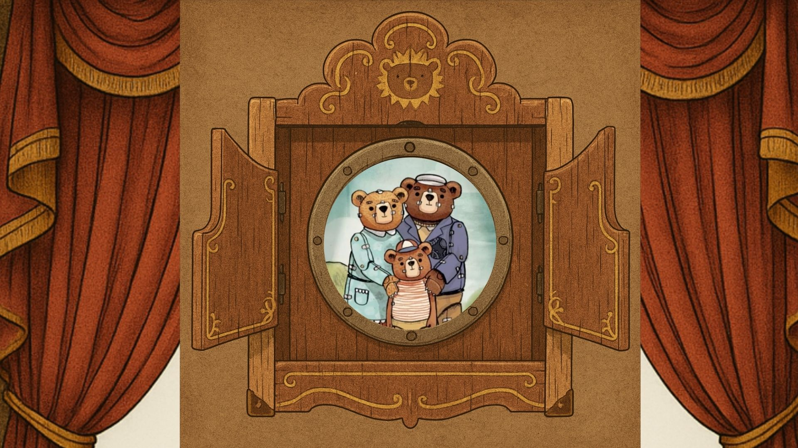

¿De qué se trata este REA?
Este recurso educativo abierto está diseñado para ser trabajado en una clase de 90 minutos con estudiantes de 3° y 4° medio de la asignatura de Lengua y Literatura, y propone una secuencia didáctica que vincula el análisis audiovisual con la memoria histórica reciente de Chile. A partir del visionado y análisis del cortometraje animado Historia de un Oso, de Gabriel Osorio Vargas —ganador del Premio Óscar en 2016—, los y las estudiantes desarrollarán habilidades de análisis crítico, reflexión ética, argumentación y producción escrita.
El material surge de la pregunta: ¿Cómo conmemorar a las personas detenidas desaparecidas, exiliadas y a las familias víctimas del golpe de Estado en Chile en las clases de Lengua y Literatura? Desde esta perspectiva, se reconoce la importancia de que los y las docentes puedan conversar con sus estudiantes sobre estos temas, especialmente cuando las clases coinciden con el 11 de septiembre, fecha cargada de memoria histórica.
La propuesta incluye un cuadernillo de trabajo que se sugiere utilizar en pequeños grupos, promoviendo la reflexión colaborativa y el diálogo respetuoso. De esta manera, se busca no solo comprender el texto audiovisual, sino también generar un espacio pedagógico de memoria y ciudadanía crítica.

üé¨ Historia de un Oso es un cortometraje animado dirigido por Gabriel Osorio que relata, a trav√©s de un diorama mec√°nico construido por un oso viejo, la separaci√≥n de su familia, su captura y su exilio como met√°fora del dolor y la memoria. Inspirada en la experiencia real del abuelo del director, Leopoldo Osorio ‚Äîdetenido, encarcelado y exiliado tras el golpe de Estado de 1973 en Chile‚Äî, la obra se convirti√≥ en un s√≠mbolo de resiliencia y memoria hist√≥rica. Su calidad art√≠stica y su profunda carga emotiva le valieron el √ìscar al Mejor Cortometraje Animado en 2016, adem√°s de m√∫ltiples reconocimientos en festivales nacionales e internacionales.